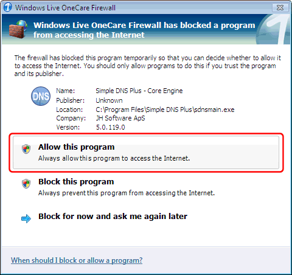
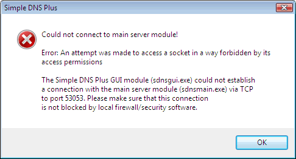
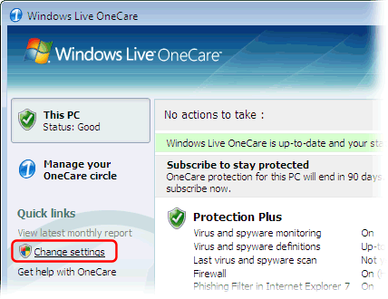
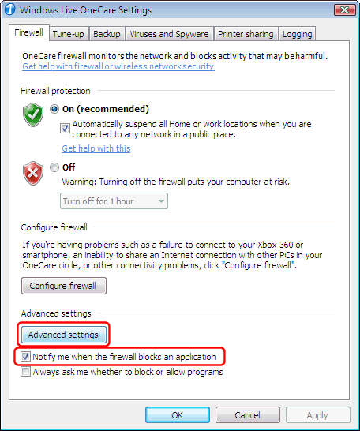
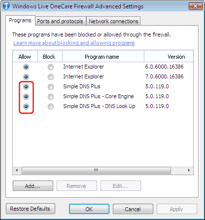

OneCare is a product from Microsoft (http://www.microsoft.com/onecare) which includes a firewall and other security functions.
The OneCare firewall monitors network traffic by application (program).
Simple DNS Plus consists of several executable modules, each of which are considered a "program" by OneCare and which must be granted access to the Internet. These modules are:
- "Simple DNS Plus - Core Engine" (sdnsmain.exe)
- "Simple DNS Plus - DNS Look Up" (lookup.exe)
- "Simple DNS Plus - DNS Record Editor" (editrecs.exe)
- "Simple DNS Plus - GUI" (sdnsgui.exe)
The first time you use each of these modules on a computer with OneCare, you should get a messages like this:

Simply click "Allow this program" each time this happens.
The first time you run Simple DNS Plus on a computer with OneCare, you will probably get the following error message:

This should only happen the first time.
After you allow Simple DNS Plus access to the Internet (see above) this should not happen again.
Simply restart Simple DNS Plus, and it should work fine.
If you encounter any problems, in the OneCare user interface, click "Change settings":

In the "OneCare Settings" dialog, under the "Firewall" tab, make sure "Notify me when the firewall blocks an application" is checked.
Then click the "Advanced" button:

In the "OneCare Firewall Advanced Settings" dialog under the "Programs" tab, make sure all Simple DNS Plus... items are allowed access:
